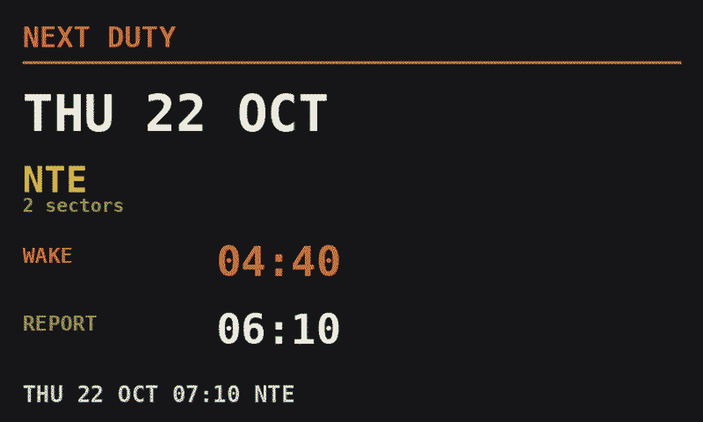
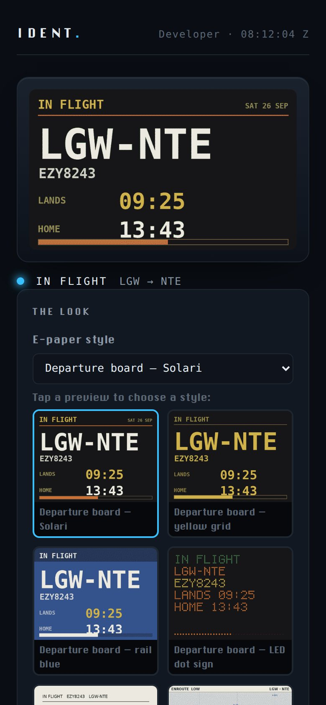
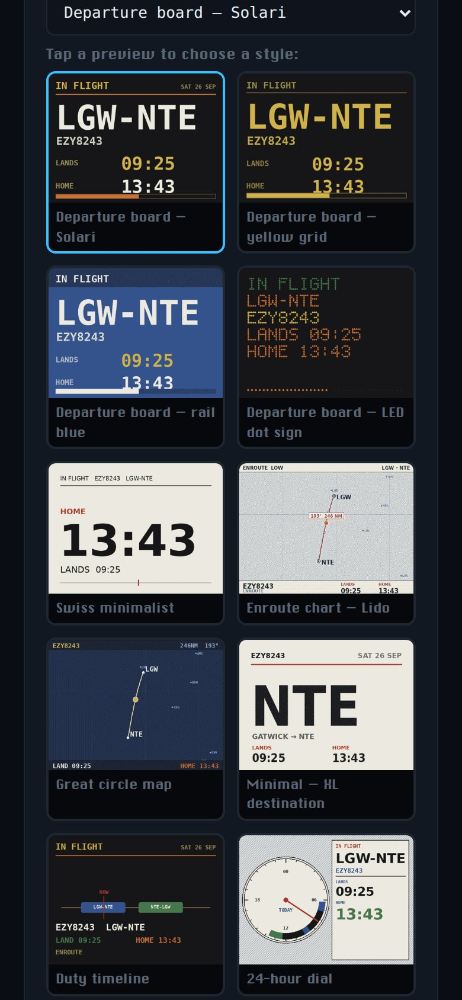
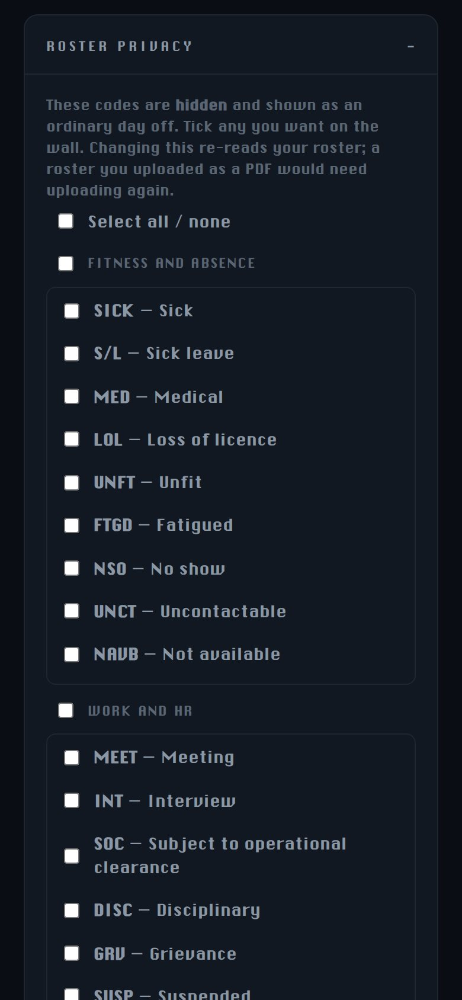

For the pilot
The display is for the people at home. This page covers what you'll notice as the pilot: roster changes, your wake-up time, commuting and the settings on your phone.
01 / Roster changes
When crewing change your day
Ident checks your roster link regularly and redraws the board when something changes. Your family sees the new plan as soon as it appears in your roster.
Called from standby
The new duty goes on the board once it's in your roster, so nobody at home waits for a message.
Delayed
With flight lookups on, the landing and home times move with the delay. Without them, the board shows the scheduled times.
Days off and early starts
They show days ahead, so the family can plan without asking you.
Whether you can talk
The board says whether you're airborne, on a turnaround or driving home, so people know when to call.
02 / Wake-up time
A time to set your alarm
Tell Ident how long you take to get ready and it gives you a wake-up time for each duty. If crewing move your report, the wake-up time moves with it. You can add the journey to base as well.
Ident only gives a wake-up time when your roster includes a report time. If it doesn't, the board says CHECK REPORT TIME.
Press the button on the frame to see the next duty: the date, the destination, your wake-up time and your report time.

Rendering: the next-duty card.
03 / Commuting
Positioning flights and the trip home
Add a flight by its number
Living in Amsterdam and based at Gatwick? Add the 05:00 AMS–LGW and Ident looks up the route and times.
One continuous day
The board follows the positioning flight, then switches to the rostered duty when you report.
Any flight with a number
Deadheading, the night before at a crashpad or the flight home on leave can all go on the board.
Your journey home
Set a drive, or a flight home after the last sector, and the home time includes it.
04 / Settings
Set everything from your phone
Choose the style, the lettering, your commute and the battery settings. Add the page to your home screen and it opens full screen with its own icon, with nothing to install from an app store.



Screens from Ident for Pi. The E1002's settings page is laid out the same way.
Prices and live-data modes are on the Prices page.